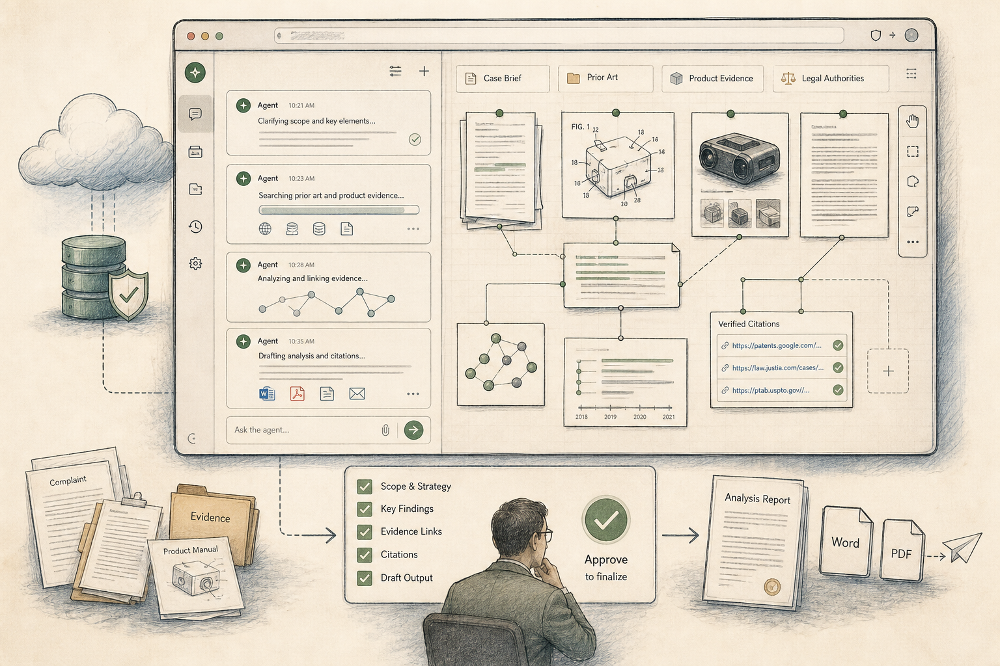
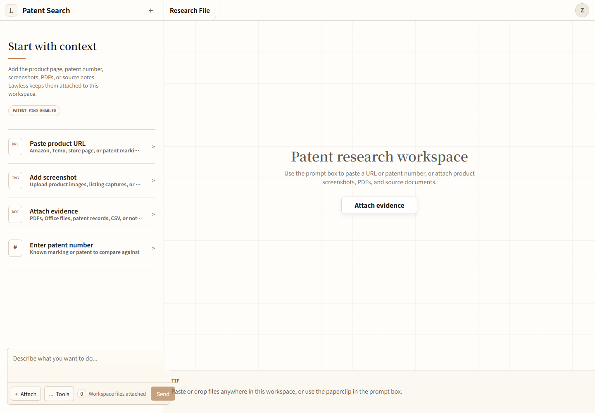
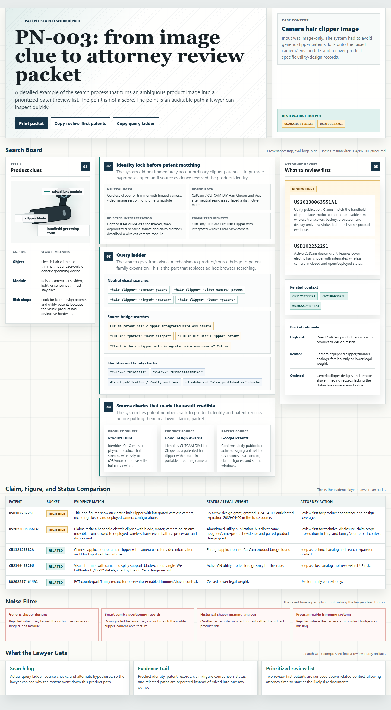
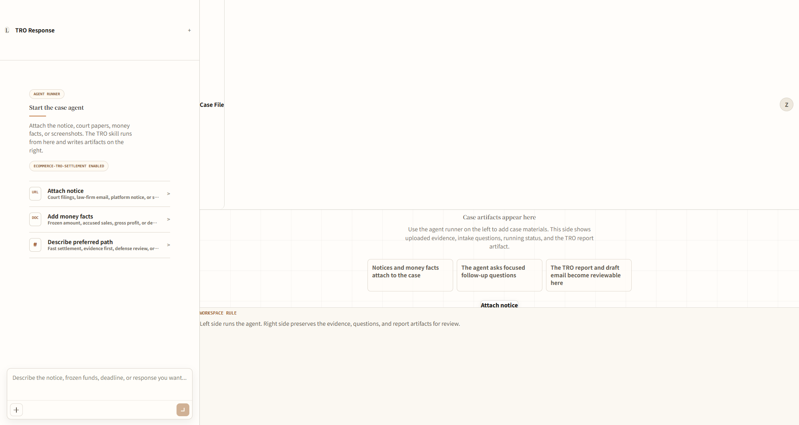
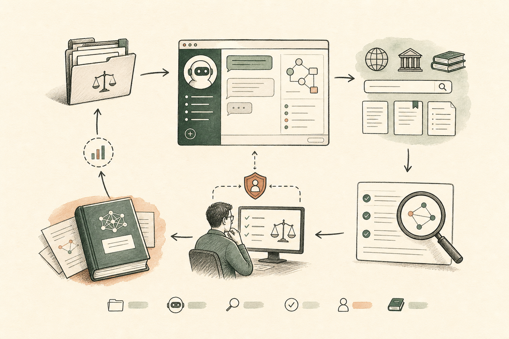
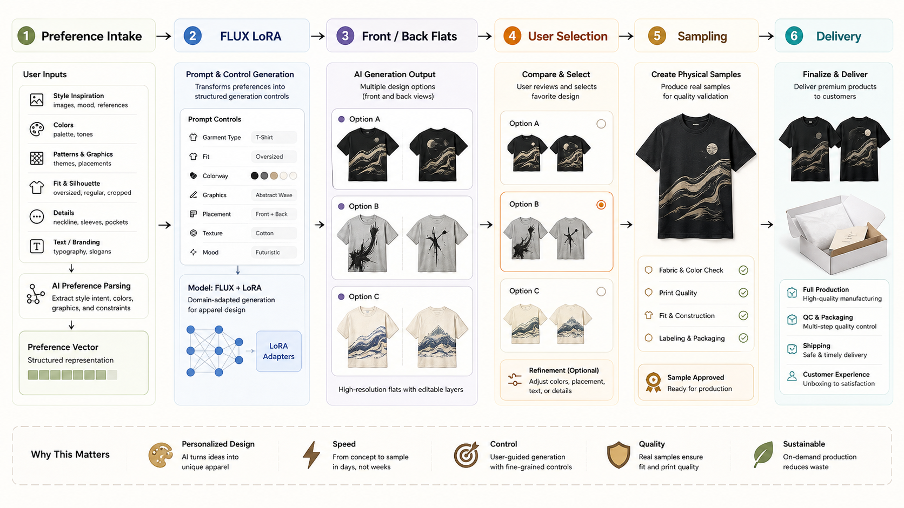
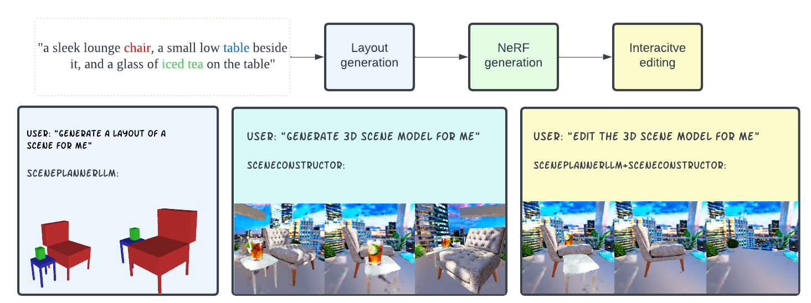
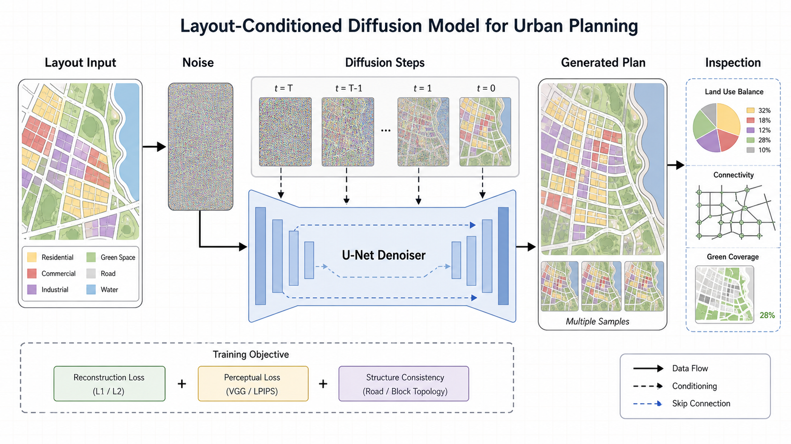
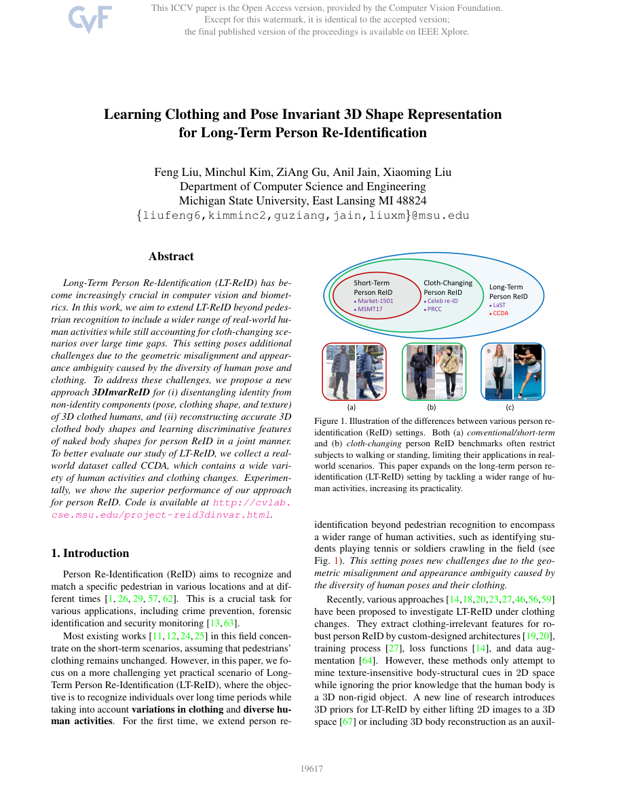

项目入口
判断这些系统到底证明了什么。
主线是 Lawless：法律/税务智能体要把材料、来源、草稿、审批和评测轨迹组织成可复核的工作包。其他项目放在它旁边，是为了说明同一种工程习惯怎样延伸到实物服装、Text-to-3D、ReID 数据评测和可复现运行边界。
专业 AI 系统
法律、税务和卖家工作流里的智能体，价值在于把材料、证据和审批边界组织起来。

工作框架就是产品：为法律和税务工作构建智能体
主 case study。它说明我如何把法律/税务 AI 做成可复核的工作包，而不是一次聊天回复。
系统产品判断、智能体工作框架、证据链和人工复核。
桌面助手在关键时刻应该可靠而克制
它说明我能处理企业场景里的本地授权、后台任务、交付物运行时和动作审批。
桌面端智能体、Outlook/M365、后台任务、ActionGate。

把混乱的卖家材料整理成可审阅案件文件
它说明我能把复杂案件流程做成低配置用户也能进入的云端工作台。
案件工作台、文件同步、SSE 流式进度、交付物栏。

专利检索是一套召回与噪声控制工作框架
它说明我能把 AI 搜索任务变成可测试、可回滚、可解释的 evidence recovery loop。
answer-blind 评测、claim/status matrix、解析器和验证器。

TRO 响应在邮件之前就已经开始
它说明我能把高压用户场景拆成 case state、证据缺口、路径选择和 review draft。
案件摘要、资金暴露、路径卡和复核工作流。

法律 AI 智能体失败时，把失败保存下来
它说明我能让智能体失败进入可回放、可评分、可回滚的改进循环。
ledger、snapshot/restore、train/holdout、verifier rubric。
保留结构的生成系统
生成结果要留下结构、偏好、物理关系和交付链路，才有继续工作的价值。

当 AI T 恤离开屏幕
它补充证明我做过从生成结果到实物打样、用户反馈和小团队交付的闭环。
用户反馈、FLUX LoRA、正反面图、打样和交付协调。

多物体 Text-to-3D 需要可检查的场景先验
它补充证明我有研究型系统经验：先建立可检查的 scene prior，再做 3D 生成。
ScenePlannerLLM、SceneConstructor、Text-to-3D、实验和消融。

如果城市布局需要被修改，它就像一个视频问题
它作为早期生成式视觉背景，说明我接触过 diffusion code，但不把它夸成完整研究成果。
3D U-Net、GaussianDiffusion、采样流程。
评测与可复现性
可信系统需要让捷径失效，让运行边界、数据边界和失败状态可以被检查。

长期 ReID 从让捷径失效的数据集开始
它补充证明我理解数据集如何约束模型捷径，并能参与长期视觉评测问题。
跨服装 ReID、数据设计、ICCV 2023 research context。

机器人 demo 只有在整次运行可检查时才可信
它作为早期工程证据，说明我重视可运行状态、部署边界和 blocker 透明度。
Webots、ROS 2、pure pursuit、LiDAR obstacle logic。